Disclaimer: The context for this analysis request is entirely fictional. However, the data comes from the Mental Health in Tech Survey 2016 by Open Sourcing Mental Health (formerly OSMI).
1. Executive Summary
This analysis provides a marketing strategy for BetterHelp to expand their corporate partnership model. It analyzes the 2016 survey results by OSMI.
A few key data points:
There is an available target market of 2.8 million potential customers for BetterHelp.
Anonymity around mental health in tech remains unknown for 65% of workers. Only 28% of them claim to have their confidentiality protected.
Only 26.8% of tech workers know their mental healthcare options available.
51% of participants declared having a mental health disorder in the past. There is a statistically significant association between family history and personal history (p-value < 0-05).
80.2% of respondents chose “maybe” or “yes, it would” when asked if being identified as a person with a mental health issue would hurt their career.
BetterHelp should address potential business partners with three defining features: anonymous, practical, and public-health-oriented.
2. About the company
BetterHelp is a mental health platform that provides online mental health services directly to clients. The online counseling and therapy services are provided through web-based interaction as well as phone and text communication. BetterHelp primarily operates as a subscription-based online mental health platform, but also generates revenue through other business streams such as corporate partnerships or gift cards.
3. Business Task
BetterHelp would like to broaden their services to employees from tech companies through the corporate partnership model, called Better Help for Organizations. For this reason, it requested an analysis of the Mental Health in Tech survey to help guide the marketing strategy for potential corporate partners in the tech industry.
4. Questions for Analysis
What is the current mental health offer at tech companies?
What is the status of employees’ mental health at tech companies?
What are the most recurrent attitudes towards mental health in the tech work space?
5. Description of data
This data set was collected by Open Sourcing Mental Health, a non-profit dedicated to raising awareness, educating, and providing resources to support mental wellness in the tech and open source communities. The data set for 2016 contains over 1,400 self-reported responses from participants primarily in the United States.
Although the survey was anonymous and confidential, with clear and neutral language, it is unclear how potential self-reporting bias issues were prevented. These limitations could be reduced in the future by applying response options randomization, ensuring reverse-coding, and cross-validating with other data sources.
New names:
Rows: 1433 Columns: 63
── Column specification
──────────────────────────────────────────────────────── Delimiter: "," chr
(56): How many employees does your company or organization have?, Does y... dbl
(7): Are you self-employed?, Is your employer primarily a tech company/...
ℹ Use `spec()` to retrieve the full column specification for this data. ℹ
Specify the column types or set `show_col_types = FALSE` to quiet this message.
• `Why or why not?` -> `Why or why not?...38`
• `Why or why not?` -> `Why or why not?...40`
To make sure I understand how variables have been imported, I use the ´skim_without_charts()´ function. However, I do not run it in this document to prevent the extensive variable list from being displayed.
6.3. Data cleaning and formatting
From skimming my data, I notice that I must proceed with the following data wrangling steps: * Filter out responses outside of the business task scope (from self-employed folks) * Rename column names * Remove outliers by age * Reformat gender responses * Reformatting mixed job titles * Renaming remote work categories
First, we drop the variables containing responses from self-employed folks since the business task does not include them.
library(dplyr)clean_mh_2016 <- mh_2016 %>%select(-17:-24)clean_mh_2016 <- clean_mh_2016 %>%filter(`Are you self-employed?`!=1)
Then, I rename all remaining columns. To achieve that, I load a rename mapping from a ´.csv´ file with old and new names. After, I use the ´rename()´ function.
Third, I remove outliers by age. The ´summary()´ function below shows 5 entries for unreasonable ages such as 3 or 323 years old - probably due to typos. Since we cannot contact participants, I proceed to drop these values outside working ages (18-80 years old), as they represent a small percentage of the total sample size (0.3%).
summary(clean_mh_2016$age)
Min. 1st Qu. Median Mean 3rd Qu. Max.
3.00 28.00 32.00 33.66 38.00 323.00
Afterwards, I reformat gender. The ´skim_without_charts()´ function in section 6 shows that gender is currently formatted as strings with a lack of standardized formatting. So, I download all distinct genders as a .csv file, standardize naming, load a rename mapping, and replace the old gender column with a new one called gender_new.
Now it is time to reformat mixed job titles. After listing all distinct job titles in the current data frame, I see a list of 264 distinct strings containing overlapping job titles concatenated by a pipe symbol. I proceed to split all job titles and recount them.
In this section I visualize and analyze the data set to understand participants’ characteristics before analyzing their survey responses. I begin by using the ´summary()´ function to check the central tendency and dispersion of the only numeric variable: age.
# to summarize agesummary(clean_mh_2016$age)
Min. 1st Qu. Median Mean 3rd Qu. Max. NA's
19.00 28.00 32.00 33.39 38.00 74.00 4
– The average age for our sample is 33 years old. Half of all respondents range between 28 and 38 years old, which is a reasonable reflection of the general working population.
Then, I explore the distribution of categorical variables like work_modality, gender_new, job_title, and country_work using the ´ggplot()´ or ´table()´ functions.
# to plot company size distributionlibrary(ggplot2)company_size_levels <-c("1-5", "6-25", "26-100", "100-500", "500-1000", "More than 1000")clean_mh_2016$company_size <-factor(clean_mh_2016$company_size, levels = company_size_levels)ggplot(clean_mh_2016, aes(x = company_size)) +geom_bar(fill ="skyblue") +labs(title ="Company Size Distribution", x ="Company Size", y ="Count") +theme_minimal() +theme(axis.text.x =element_text(angle =45, hjust =1)) +geom_text(aes(label =paste0(sprintf("%.1f", after_stat(count /sum(count) *100)), "%")),stat ="count",position =position_stack(vjust =0.5),size =3 )
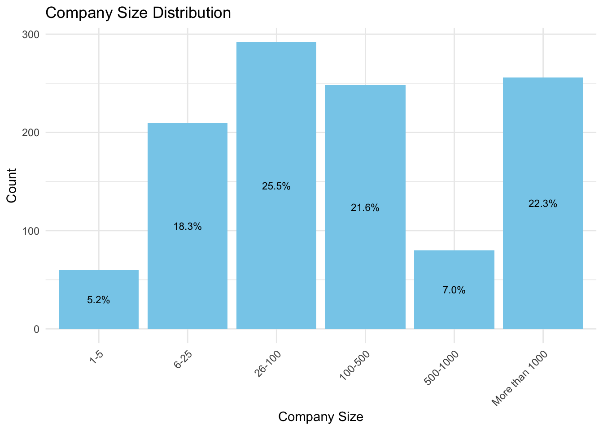
– Almost half of the survey respondents belong to either a small-medium enterprise or a large corporation, as they account for 25.5% and 22.3% of the sample size respectively. The insights extracted from this analysis will better reflect these company sizes.
# to plot work modality distributionggplot(clean_mh_2016, aes(x = work_modality)) +geom_bar(fill ="skyblue") +labs(title ="Work Modality Distribution", x ="Work Modality", y ="Count") +theme_minimal() +theme(axis.text.x =element_text(angle =0, hjust =0.5)) +geom_text(aes(label =paste0(sprintf("%.1f", after_stat((count /sum(count)) *100)), "%")),stat ="count",position =position_stack(vjust =0.5),size =3 )
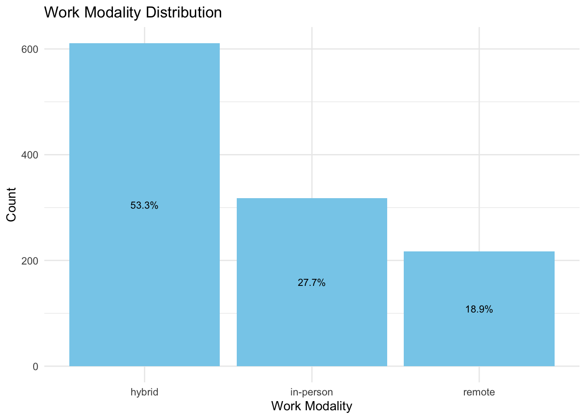
– Similarly, this analysis will better represent workers in a hybrid work model as they account for 53.3% of responses.
– Almost 3 out of 4 respondents are male, which might be due to a lack of gender representation in the tech industry.
# to plot job title distributionggplot(data.frame(Job_Category =names(job_category_counts), Count =as.numeric(job_category_counts)),aes(x = Count, y = Job_Category)) +geom_bar(stat ="identity", fill ="skyblue") +labs(title ="Job Title Distribution", x ="Count", y ="Job Category") +theme_minimal() +geom_text(aes(label = Count),position =position_dodge(width =0.8),size =3,hjust =-0.2 )
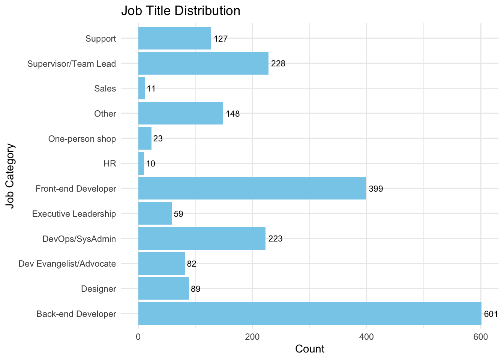
– The top two job titles refer to developers (back-end and front-end). Further marketing initiatives should consider their needs to customize mental health offers.
# to list respondents' countries in descending ordercountry_counts <-as.data.frame(table(clean_mh_2016$country_work))country_counts <- country_counts %>%arrange(desc(Freq))total_count <-sum(country_counts$Freq)country_counts <-mutate(country_counts, Percentage = Freq / total_count *100)print(country_counts)
Var1 Freq Percentage
1 United States of America 716 62.47818499
2 United Kingdom 133 11.60558464
3 Canada 61 5.32286213
4 Germany 44 3.83944154
5 Netherlands 31 2.70506108
6 Australia 26 2.26876091
7 Sweden 15 1.30890052
8 France 11 0.95986038
9 Ireland 10 0.87260035
10 Brazil 9 0.78534031
11 Russia 9 0.78534031
12 India 7 0.61082024
13 Bulgaria 6 0.52356021
14 New Zealand 6 0.52356021
15 Switzerland 6 0.52356021
16 Denmark 5 0.43630017
17 Finland 5 0.43630017
18 South Africa 4 0.34904014
19 Belgium 3 0.26178010
20 Chile 3 0.26178010
21 Italy 3 0.26178010
22 Norway 3 0.26178010
23 Bosnia and Herzegovina 2 0.17452007
24 Colombia 2 0.17452007
25 Estonia 2 0.17452007
26 Israel 2 0.17452007
27 Mexico 2 0.17452007
28 Pakistan 2 0.17452007
29 Poland 2 0.17452007
30 Spain 2 0.17452007
31 Afghanistan 1 0.08726003
32 Argentina 1 0.08726003
33 Austria 1 0.08726003
34 Bangladesh 1 0.08726003
35 Czech Republic 1 0.08726003
36 Ecuador 1 0.08726003
37 Hungary 1 0.08726003
38 Iran 1 0.08726003
39 Japan 1 0.08726003
40 Other 1 0.08726003
41 Romania 1 0.08726003
42 Slovakia 1 0.08726003
43 United Arab Emirates 1 0.08726003
44 Vietnam 1 0.08726003
– The USA and Canada reflect 73% of respondents’ country of work. These would be the best territories for BetterHelp to expand their corporate partnership model as there is currently more information from that region.
Lastly, I create a mosaic plot for the work modality and gender categories to visualize the distribution of both categorical variables.
# to create a mosaic plotmosaicplot(table(clean_mh_2016$gender_new, clean_mh_2016$work_modality), main="Mosaic for Gender vs. Work Modality")
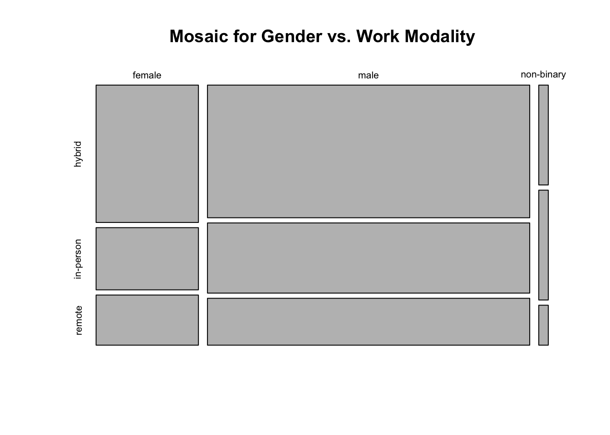
– As a final note, this mosaic summarizes that most respondents are males working in the hybrid work model.
8. Deep Data Analysis
To answer the three questions for analysis, I split up the survey results thematically as stated below: 1. Current mental health offer at tech companies: Info on mental health resources available + observed responses at work 2. Status of employees’ mental health at tech companies: Info on personal and family mental health history 3. Most recurrent attitudes towards mental health in the tech work space: Info on perceptions of mental health at work + perceptions of mental health on professional career
8.1 Current mental health offer
Mental health resources available at tech companies
# to check mh package coveragelibrary(ggplot2)ggplot(clean_mh_2016, aes(x ="", fill = mh_package_offering, label = mh_package_offering)) +geom_bar(width =1, color ="white") +coord_polar("y") +geom_text(aes(label = scales::percent(..count.. /sum(..count..))),stat ="count", position =position_stack(vjust =0.5)) +labs(title ="Does your employer provide mental health benefits as part of healthcare coverage?") +theme_void() +theme(legend.title =element_blank()) +guides(fill =guide_legend(title =NULL))
Warning: The dot-dot notation (`..count..`) was deprecated in ggplot2 3.4.0.
ℹ Please use `after_stat(count)` instead.
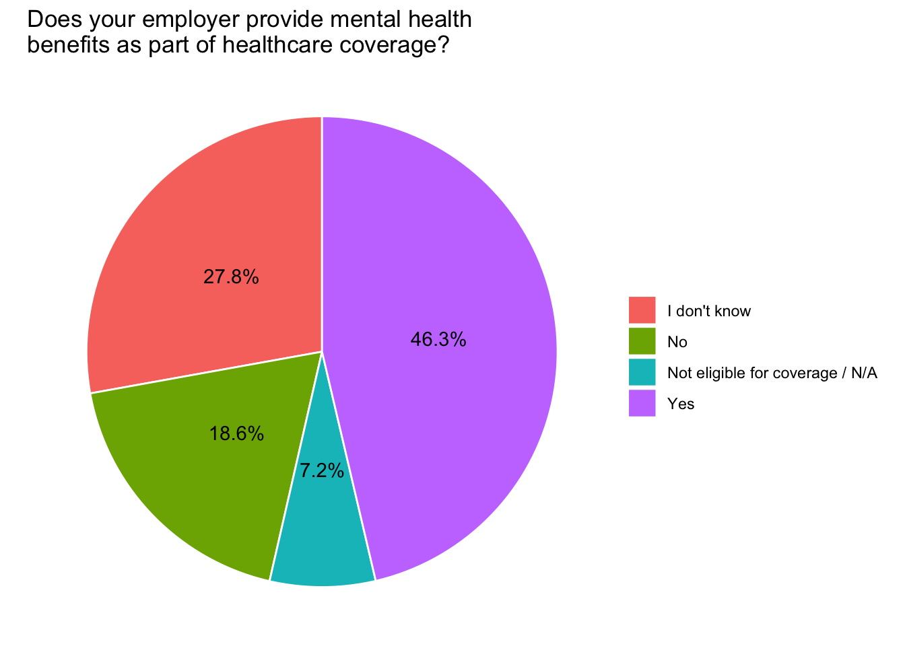
– Less than half of the sample population of tech workers claim to receive mental health benefits as part of their healthcare coverage. According to Statista, in 2020 the US employed roughly 5.2 million workers. For BetterHelp, this means that there is likely an available market of 2.8 million workers to expand their services to.
# to to check for package knowledgelibrary(ggplot2)ggplot(clean_mh_2016, aes(x ="", fill = mh_package_knowledge, label = mh_package_knowledge)) +geom_bar(width =1, color ="white") +coord_polar("y") +geom_text(aes(label = scales::percent(..count.. /sum(..count..))),stat ="count", position =position_stack(vjust =0.5)) +labs(title ="Do you know the options for mental health care available under your employer-provided coverage?") +theme_void() +theme(legend.title =element_blank()) +guides(fill =guide_legend(title =NULL))
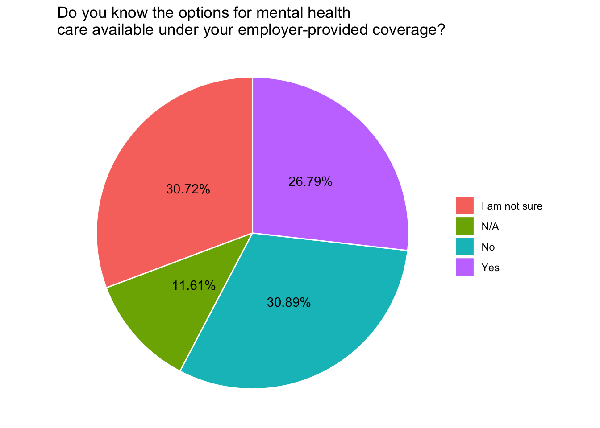
– Even though 46.3% of tech workers claim to have mental healthcare covered, only 26.8% know their care options available. This means there is a need for mental health coverage to be simplified to workers.
# to check for mh discussion with employerlibrary(ggplot2)ggplot(clean_mh_2016, aes(x ="", fill = mh_discussion_employer, label = mh_discussion_employer)) +geom_bar(width =1, color ="white") +coord_polar("y") +geom_text(aes(label = scales::percent(..count.. /sum(..count..))),stat ="count", position =position_stack(vjust =0.5)) +labs(title ="Has your employer ever formally discussed mentalhealth (for example, as part of a wellness campaign or other official communication)?") +theme_void() +theme(legend.title =element_blank()) +guides(fill =guide_legend(title =NULL))
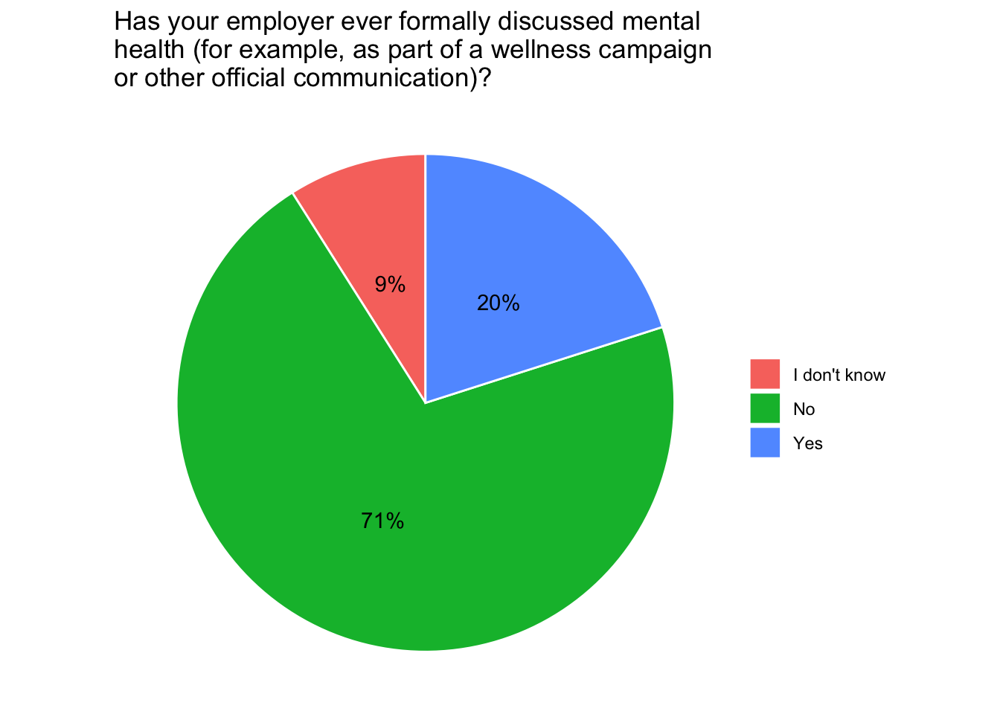
– Only 1 in 5 workers have discussed mental health with their employers, meaning that this is a topic not commonly addressed in the work space.
# to check if employer offers mh resourceslibrary(ggplot2)ggplot(clean_mh_2016, aes(x ="", fill = mh_employer_resources, label = mh_employer_resources)) +geom_bar(width =1, color ="white") +coord_polar("y") +geom_text(aes(label = scales::percent(..count.. /sum(..count..))),stat ="count", position =position_stack(vjust =0.5)) +labs(title ="Does your employer offer resources to learn more about mental health concerns and options for seeking help?") +theme_void() +theme(legend.title =element_blank()) +guides(fill =guide_legend(title =NULL))
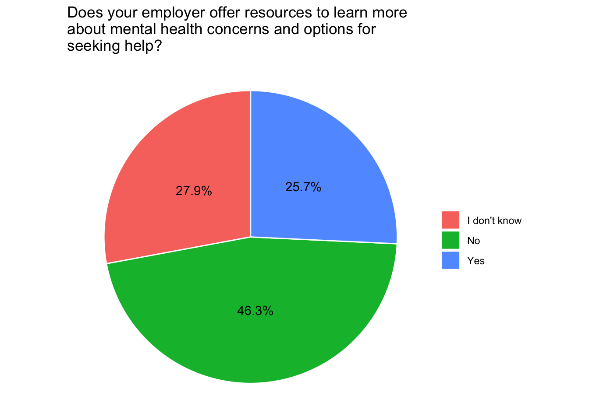
– Moreover, only 1 in 4 workers claim their employer offers resources to learn more about mental health. This is coherent with the percentage of workers who claim to receive mental health coverage as part of their health care package.
#to check for anonymity in the work placelibrary(ggplot2)ggplot(clean_mh_2016, aes(x ="", fill = mh_anonymity, label = mh_anonymity)) +geom_bar(width =1, color ="white") +coord_polar("y") +geom_text(aes(label = scales::percent(..count.. /sum(..count..))),stat ="count", position =position_stack(vjust =0.5)) +labs(title ="Is your anonymity protected if you choose to take advantage of mental health or substance abuse treatment resources provided by your employer?") +theme_void() +theme(legend.title =element_blank()) +guides(fill =guide_legend(title =NULL))
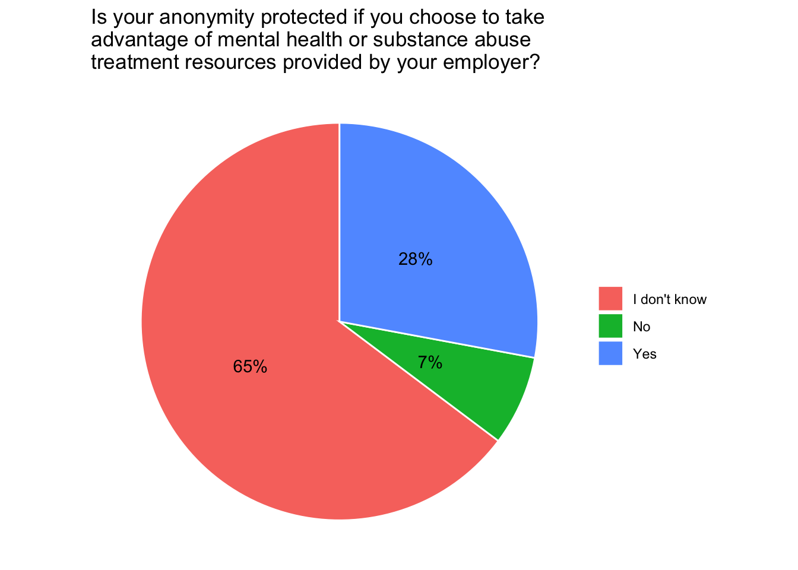
– Anonymity around mental health in tech remains unknown for most workers (65%). Only 28% of them claim to have their confidentiality protected, which might inform responses in section 7.3. around most recurrent attitudes. This means that BetterHelp needs to address transparency around anonymity in their marketing efforts.
Observed responses at work
# to check for past poor experiences at worklibrary(ggplot2)ggplot(clean_mh_2016, aes(x ="", fill = mh_poor_response, label = mh_poor_response)) +geom_bar(width =1, color ="white") +coord_polar("y") +geom_text(aes(label = scales::percent(..count.. /sum(..count..))),stat ="count", position =position_stack(vjust =0.3)) +labs(title ="Have you observed or experienced an unsupportive or badly handled response to a mental health issue in your current or previous workplace?") +theme_void() +theme(legend.title =element_blank()) +guides(fill =guide_legend(title =NULL))
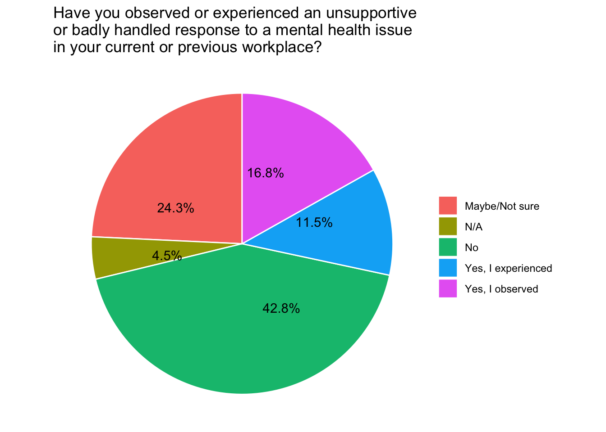
– Only 16.8% of respondents have witnessed an unsupportive response to a mental health issue at work. However, this might be due to mental health not being addressed at work at all, rather than employers handling mental health issues properly. More research on that question would be needed.
8.2 Status of employees’ mental health
Personal and family mental health history
# to check for family history of mhggplot(clean_mh_2016, aes(x =factor(mh_family_history, levels =rev(levels(factor(mh_family_history)))))) +geom_bar(fill ="#A1D99B", color ="white") +geom_text(stat ="count", aes(label = scales::percent(..count.. /sum(..count..))), vjust =-0.5) +labs(title ="Family History of Mental Health Issues", x ="Family History",y ="Count") +theme(axis.text.x =element_text(angle =0, hjust =0.5),plot.title =element_text(face ="bold"))
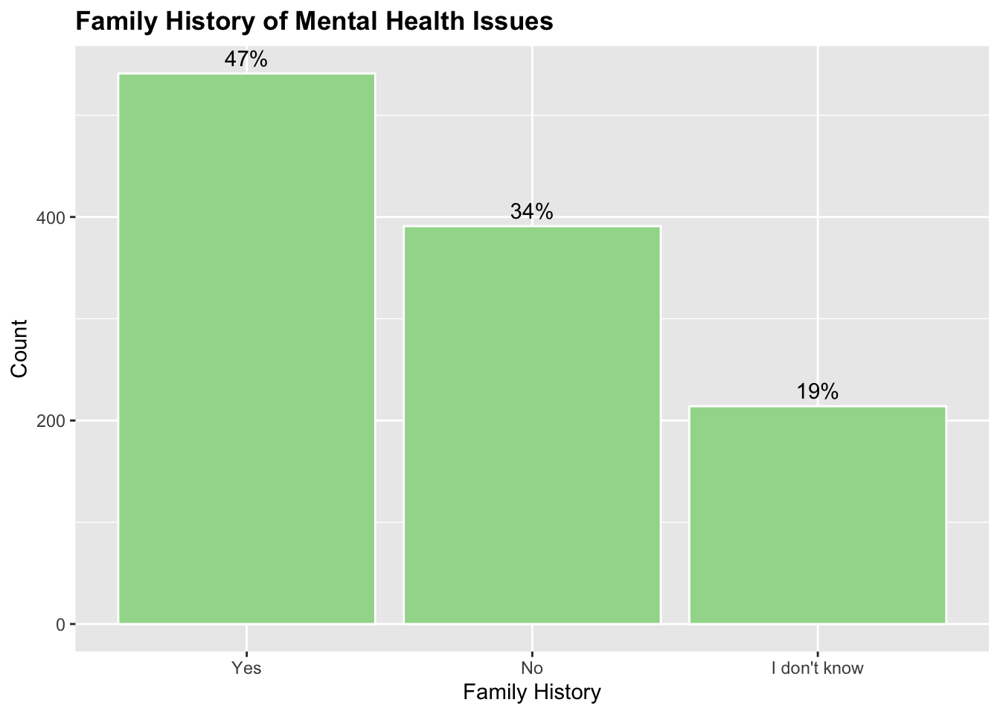
– Almost half of respondents claim to have a family history of mental health issues (47%).
#to check for past mental health disordersggplot(clean_mh_2016, aes(x =factor(mh_personal_history, levels =rev(levels(factor(mh_personal_history)))))) +geom_bar(fill ="#A1D99B", color ="white") +geom_text(stat ="count", aes(label = scales::percent(..count.. /sum(..count..))), vjust =-0.5) +labs(title ="Past Mental Health Disorder", x ="Past MH Disorder",y ="Count") +theme(axis.text.x =element_text(angle =0, hjust =0.5),plot.title =element_text(face ="bold"))
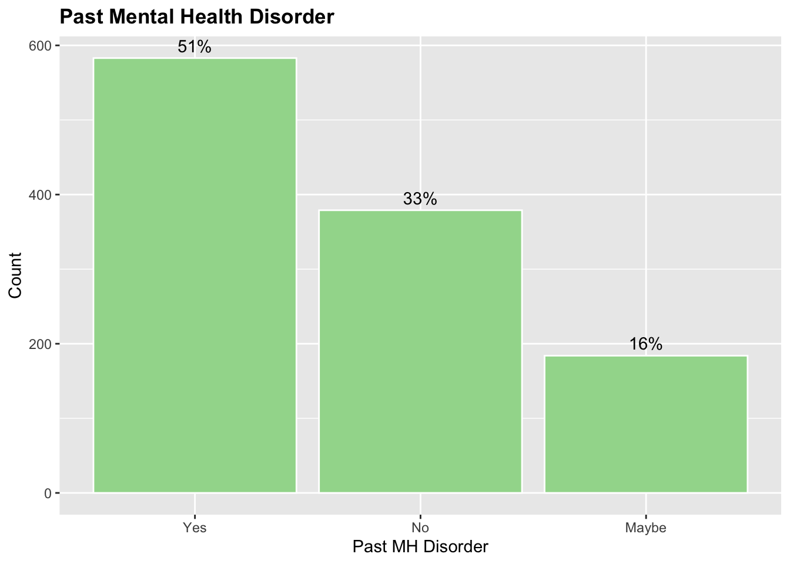
– While half of them also claim to have had a mental health disorder in the past (51%).
I create a contingency table and perform a chi’s square test to check if family history and personal history are associated or independent categorical variables.
– Since the p-value is reported as less than 2.2e-16, much below the 0.05 level, I conclude that there is a statistically significant association between family history and personal history within my sample.
# to check for current mh disordersggplot(clean_mh_2016, aes(x =factor(mh_current_condition, levels =rev(levels(factor(mh_current_condition)))))) +geom_bar(fill ="#A1D99B", color ="white") +geom_text(stat ="count", aes(label = scales::percent(..count.. /sum(..count..))), vjust =-0.5) +labs(title ="Current Mental Health Disorder", x ="Current MH Disorder",y ="Count") +theme(axis.text.x =element_text(angle =0, hjust =0.5),plot.title =element_text(face ="bold"))
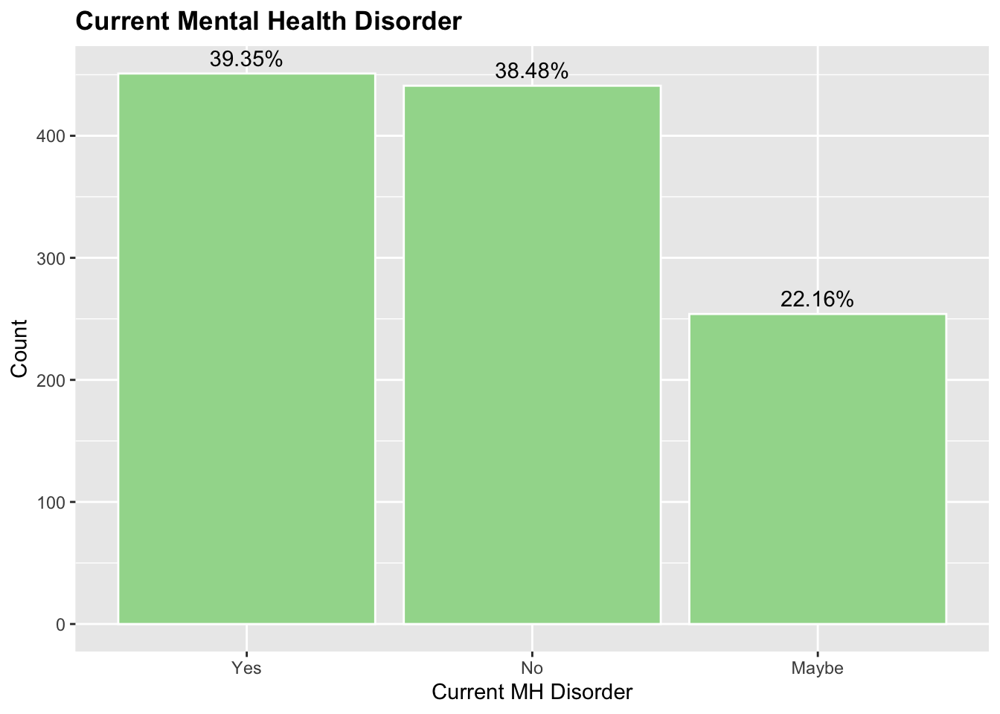
– When inquired about current mental health disorders, there is a 24% decline in confirmed cases compared to past disorders (39% vs. 51%). This might be due to the stigma around the topic, particularly to current employers finding out about workers’ mental health disorders.
# to check for names and recurrence of past diagnosed mh conditionslibrary(dplyr)library(tidyr)clean_mh_2016_deconcat <- clean_mh_2016 %>%separate_rows(details_current_condition, sep ="\\|") %>%filter(!is.na(details_current_condition)) %>%mutate(details_current_condition =trimws(details_current_condition))category_counts <- clean_mh_2016_deconcat %>%count(details_current_condition, sort =TRUE)category_counts <- category_counts %>%mutate(Percentage = n /sum(n) *100)print(category_counts %>%rename("Past Diagnosed Mental Health Conditions"= details_current_condition,"Count"= n,"Percentage"= Percentage))
– The top two diagnosed mental health conditions are (1) mood disorder (depression, bipolar disorder, etc.), and (2) anxiety disorder (generalized, social, phobia, etc.). They amount to 64.6% of all diagnosed mental health conditions.
# top check for name and recurrence of suspected mental health conditionslibrary(dplyr)library(tidyr)clean_mh_2016_deconcat2 <- clean_mh_2016 %>%separate_rows(details_suspected_condition, sep ="\\|") %>%filter(!is.na(details_suspected_condition)) %>%mutate(details_suspected_condition =trimws(details_suspected_condition))category_counts2 <- clean_mh_2016_deconcat2 %>%count(details_suspected_condition, sort =TRUE)category_counts2 <- category_counts2 %>%mutate(Percentage = n /sum(n) *100)print(category_counts2 %>%rename("Suspected Mental Health Conditions"= details_suspected_condition,"Count"= n,"Percentage"= Percentage))
– The top two suspected mental health conditions are also (1) mood disorder (depression, bipolar disorder, etc.), and (2) anxiety disorder (generalized, social, phobia, etc.). They amount to 61.7% of all diagnosed mental health conditions, so BetterHelp should be prepared to tackle these disorders first and foremost.
# to check for mh medical diagnoselibrary(ggplot2)ggplot(clean_mh_2016, aes(x ="", fill = mh_medical_diagnose, label = mh_medical_diagnose)) +geom_bar(width =1, color ="white") +coord_polar("y") +geom_text(aes(label = scales::percent(..count.. /sum(..count..))),stat ="count", position =position_stack(vjust =0.5)) +labs(title ="Have you been diagnosed with a mental health condition by a medical professional?") +theme_void() +theme(legend.title =element_blank()) +guides(fill =guide_legend(title =NULL))
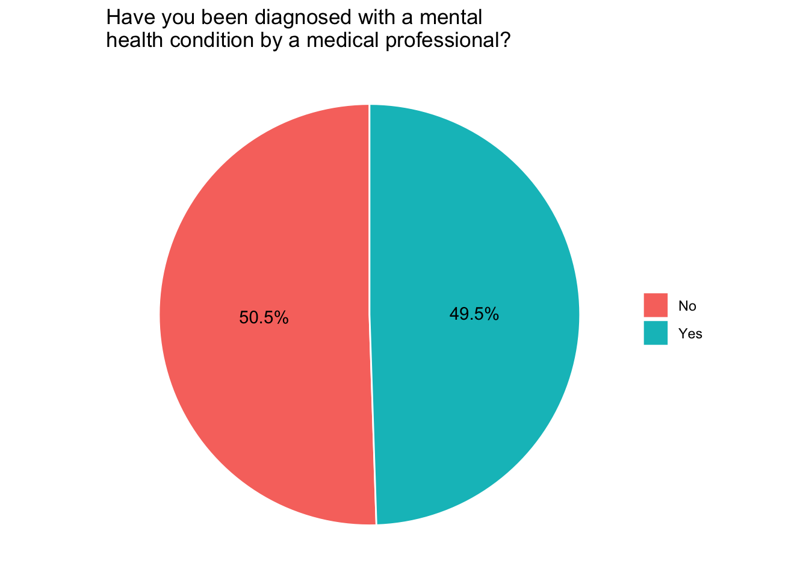
– Almost half of respondents claim to have a diagnosis of a mental health condition by a medical professional (49.5%). This matches the number of people who declared past mental health disorders (51%) - it serves as cross-validation to the previous answer.
# to check for names and recurrence of mh medical diagnoseslibrary(dplyr)library(tidyr)clean_mh_2016_deconcat3 <- clean_mh_2016 %>%separate_rows(details_mh_medical_diagnose, sep ="\\|") %>%filter(!is.na(details_mh_medical_diagnose)) %>%mutate(details_mh_medical_diagnose =trimws(details_mh_medical_diagnose))category_counts3 <- clean_mh_2016_deconcat3 %>%count(details_mh_medical_diagnose, sort =TRUE)category_counts3 <- category_counts3 %>%mutate(Percentage = n /sum(n) *100)print(category_counts3 %>%rename("MH Diagnose by Medical Professional"= details_mh_medical_diagnose,"Count"= n,"Percentage"= Percentage))
– The details for all medical diagnoses also match previous responses, as the top two disorders are (1) mood disorder (depression, bipolar disorder, etc.), and (2) anxiety disorder (generalized, social, phobia, etc.). This also serves as cross-validation to previous answers.
# to check for treatment search for a mh conditionggplot(clean_mh_2016, aes(x ="", fill =factor(mh_treatment_history), label =factor(mh_treatment_history))) +geom_bar(width =1, color ="white") +coord_polar("y") +geom_text(aes(label = scales::percent(..count.. /sum(..count..))),stat ="count", position =position_stack(vjust =0.5)) +scale_fill_manual(values =c("0"="skyblue", "1"="lightcoral"), name ="Mental Health Treatment History",labels =c("No", "Yes")) +# Specify fill colors and legend labelslabs(title ="Have you sought treatment for a mental health issue from a mental health professional?") +theme_void() +theme(legend.title =element_blank())
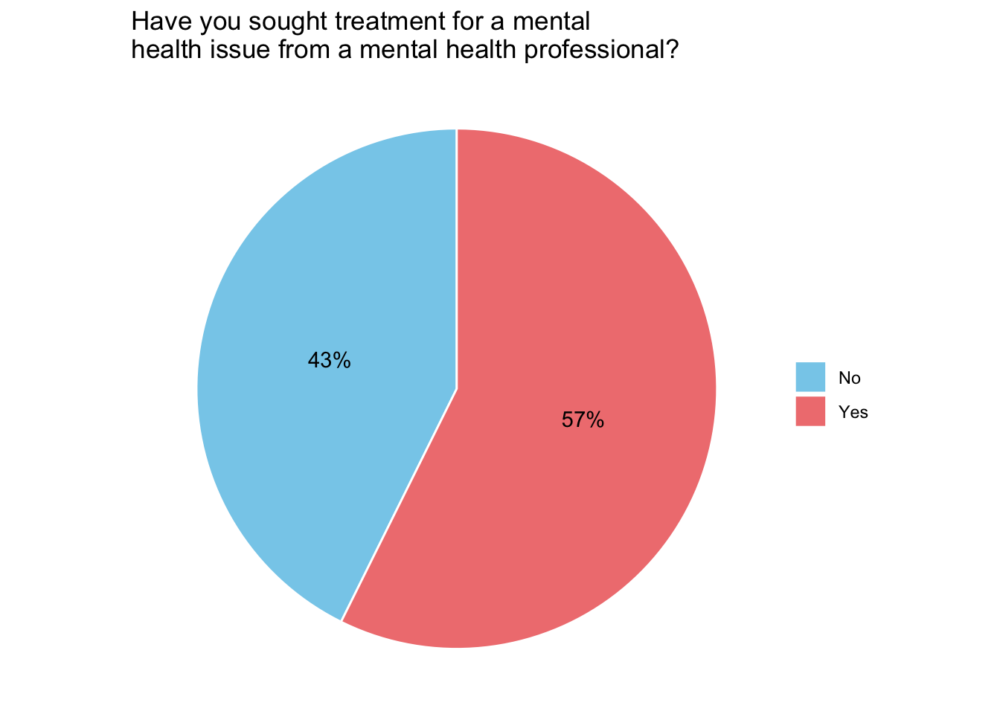
– Finally, even though only 39% of current tech workers claim to have current mental health disorders, 57% have sought treatment from a mental health professional. This indicates to BetterHelp the willingness of tech workers to address their mental health issues.
8.3 Recurrent attitudes towards mental health in the work space
Perceptions of mental health at work
# to check difficulty of taking MH leavelibrary(ggplot2)desired_order <-c("Very difficult", "Somewhat difficult", "Neither easy nor difficult", "Somewhat easy", "Very easy", "I don't know")ggplot(clean_mh_2016, aes(x =factor(mh_leave, levels = desired_order))) +geom_bar() +geom_text(aes(label = scales::percent(..count.. /sum(..count..))),stat ="count",position =position_stack(vjust =0.5),vjust =-0.5,size =3 ) +labs(title ="Difficulty of Taking Mental Health Leave",x ="Difficulty", y ="Count") +theme(axis.text.x =element_text(angle =45, hjust =1))
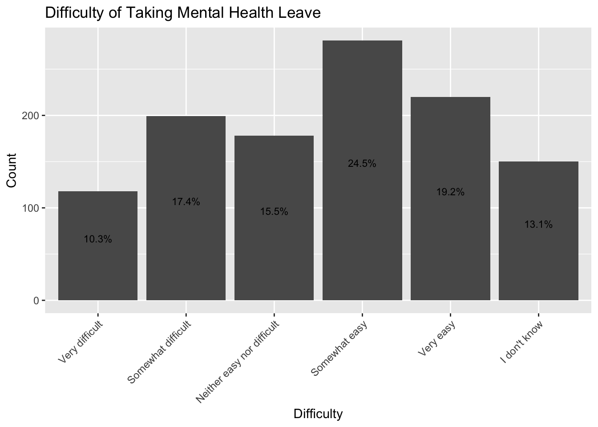
– The most popular response when inquired about the difficulty of requesting mental health leave is “somewhat easy” at 24.5%.
# to check consequence of mh discussion with employerlibrary(ggplot2)ggplot(clean_mh_2016, aes(x ="", fill = mh_discussion_employer_consequence, label = mh_discussion_employer_consequence)) +geom_bar(width =1, color ="white") +coord_polar("y") +geom_text(aes(label = scales::percent(..count.. /sum(..count..))),stat ="count", position =position_stack(vjust =0.5)) +labs(title ="Do you think that discussing a mental health disorder with your employer would have negative consequences?") +theme_void() +theme(legend.title =element_blank()) +guides(fill =guide_legend(title =NULL))
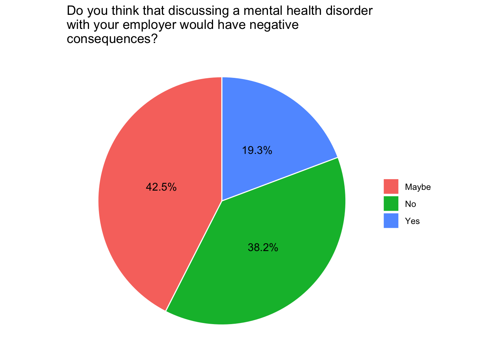
– However, there is a notable uncertainty around discussing mental health disorders with employers, as only 38.2% feel they would not face negative consequences. BetterHelp’s solution should ensure its communication strategy with employees addresses no potential negative issues with their employees as they use their mental health services.
# to check consequence of ph discussion with employerlibrary(ggplot2)ggplot(clean_mh_2016, aes(x ="", fill = ph_discussion_employer_consequence, label = ph_discussion_employer_consequence)) +geom_bar(width =1, color ="white") +coord_polar("y") +geom_text(aes(label = scales::percent(..count.. /sum(..count..))),stat ="count", position =position_stack(vjust =0.5)) +labs(title ="Do you think that discussing a physical health issuewith your employer would have negativeconsequences?") +theme_void() +theme(legend.title =element_blank()) +guides(fill =guide_legend((title =NULL)))
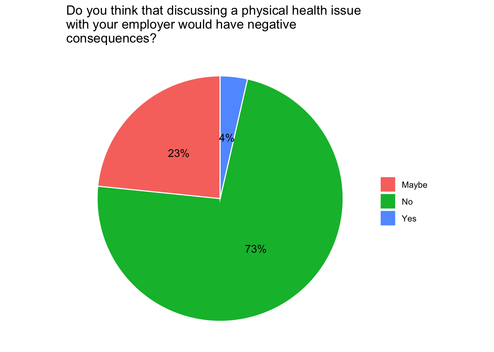
– This is even more relevant when roughly 3 out of 4 respondents believe they would not face negative consequences for discussing physical health issues. There is guilt around bringing up mental health issues in the workplace that must be addressed with the association between a mental health diagnosis and a history of mental health in the family.
# to check consequence of mh discussion with coworkerslibrary(ggplot2)ggplot(clean_mh_2016, aes(x ="", fill = mh_discussion_coworker_comfort, label = mh_discussion_coworker_comfort)) +geom_bar(width =1, color ="white") +coord_polar("y") +geom_text(aes(label = scales::percent(..count.. /sum(..count..))),stat ="count", position =position_stack(vjust =0.5)) +labs(title ="Would you feel comfortable discussing a mental health disorder with your coworkers?") +theme_void() +theme(legend.title =element_blank()) +guides(fill =guide_legend((title =NULL)))
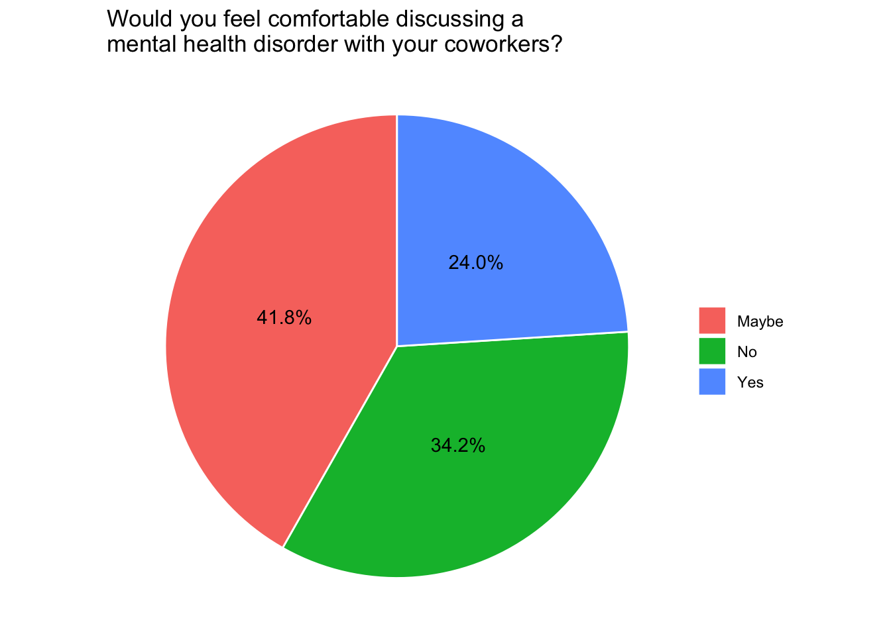
– The discomfort of discussing mental health disorders in the work space extends to the relations with co-workers. Only 1 in 4 would feel comfortable doing so (24% of respondents).
# to check consequence of mh discussion with direct supervisorlibrary(ggplot2)ggplot(clean_mh_2016, aes(x ="", fill = mh_discussion_supervisor_comfort, label = mh_discussion_supervisor_comfort)) +geom_bar(width =1, color ="white") +coord_polar("y") +geom_text(aes(label = scales::percent(..count.. /sum(..count..))),stat ="count", position =position_stack(vjust =0.5)) +labs(title ="Would you feel comfortable discussing a mental health disorder with your direct supervisor(s)?") +theme_void() +theme(legend.title =element_blank()) +guides(fill =guide_legend((title =NULL)))
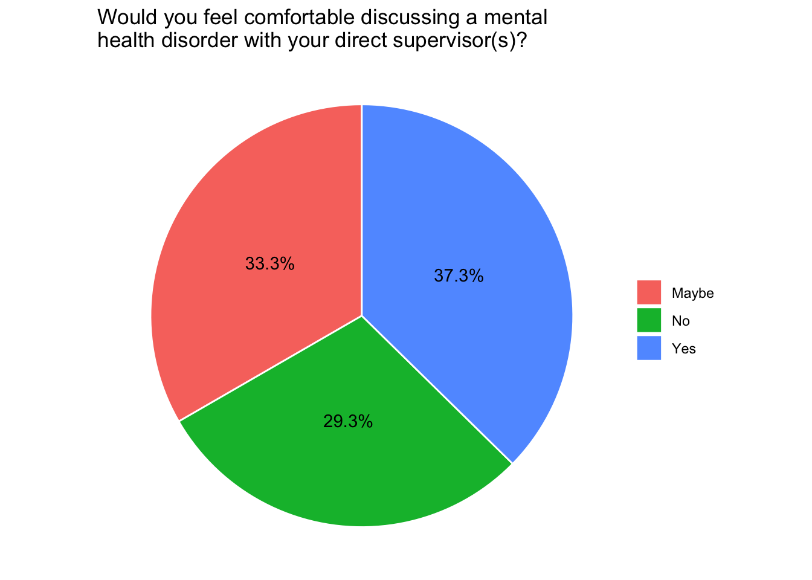
– Likewise, only 29.3% would feel comfortable discussing mental health with their direct supervisor.
Perceptions of mental health on professional career
# to compare physical and mental health issue disclosure in interviewslibrary(ggplot2)category_order <-c("Yes", "Maybe", "No")# start by gathering the data to long formatclean_mh_2016_long <- tidyr::gather(clean_mh_2016, key ="Disclosure_Type", value ="Response", ph_disclosure_interview, mh_disclosure_interview)clean_mh_2016_long$Disclosure_Type <-ifelse(clean_mh_2016_long$Disclosure_Type =="ph_disclosure_interview", "Physical Health", "Mental Health")clean_mh_2016_long$Disclosure_Type <-factor(clean_mh_2016_long$Disclosure_Type, levels =c("Physical Health", "Mental Health"))ggplot(clean_mh_2016_long, aes(x =factor(Response, levels = category_order), fill = Disclosure_Type)) +geom_bar(position ="dodge", color ="black", stat ="count") +scale_fill_manual(values =c("Physical Health"="green", "Mental Health"="blue"),name ="Disclosure Type") +labs(x ="Disclosure Response",y ="Count",title ="Would you be willing to bring up a healthissue with a potential employer in an interview?") +theme_minimal() +theme(legend.position ="right",legend.title =element_text(face ="bold"))
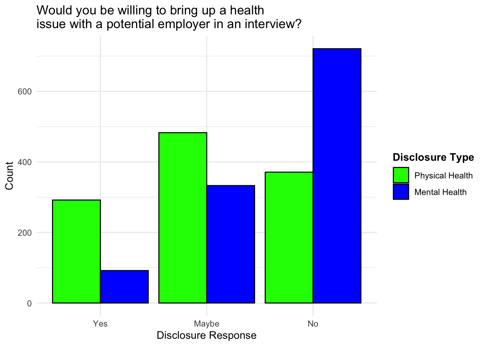
– When it comes to mental health being discussed in job interviews, employees tend to hide either physical or mental health issues from potential employers. However, mental health issues are hidden at double the rate of physical issues. BetterHelp could enable potential business partners to differentiate themselves as better places to work by helping them handle mental health issues in the application process.
# to create a word cloud with ph disclosure explanationlibrary(tidytext)library(wordcloud)
wordcloud(words = top_words$word, freq = top_words$n, scale=c(3, 0.5), main="Top 20 Words associated with PH disclossure")
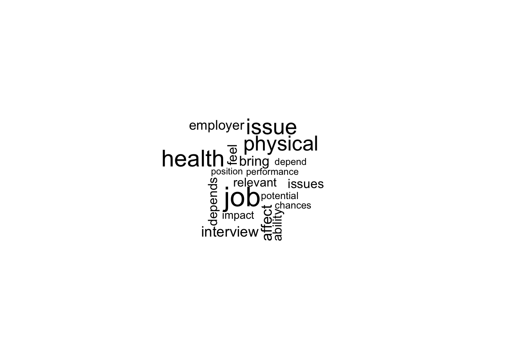
– The most recurrent words around bringing up physical health issues are “job”, “health”, “issue”, and “physical”.
# to create a word cloud with mh disclosure explanationlibrary(tidytext)library(wordcloud)text_data <- clean_mh_2016$why_mh_disclosure_interviewtidy_text <-tibble(text = text_data) %>%unnest_tokens(word, text)tidy_text <- tidy_text %>%anti_join(stop_words)
Joining with `by = join_by(word)`
word_freq <-count(tidy_text, word, sort =TRUE)top_words <-head(word_freq, 20)print(top_words, n =20)
# A tibble: 20 × 2
word n
<chr> <int>
1 <NA> 249
2 mental 214
3 health 201
4 job 148
5 issues 111
6 issue 100
7 stigma 98
8 feel 83
9 interview 78
10 employer 75
11 affect 69
12 physical 59
13 bring 58
14 hire 45
15 reason 42
16 fear 36
17 people 36
18 chances 35
19 negative 35
20 ability 33
wordcloud(words = top_words$word, freq = top_words$n, scale=c(3, 0.5), main="Top 20 Words associated with MH disclosure")
– The most recurrent words around bring up mental health issues are “mental”, “health”, “job”, and “issues”. The point at which both of the previous answers differ is around the themes of “affect interview” (for physical health) and “stigma” (for mental health). This confirms previous hypotheses in this analysis.
# to plot effect of MH self-identification on careercategory_order <-c("Yes, it has", "Yes, I think it would", "Maybe", "No, I don't think it would", "No, it has not")total_responses <-nrow(clean_mh_2016)ggplot(clean_mh_2016, aes(x =factor(mh_identity_effect_career, levels = category_order))) +geom_bar(fill ="lightblue", color ="black") +geom_text(stat='count', aes(label=sprintf("%0.1f%%", after_stat(count / total_responses *100))), vjust=-0.5, size =3) +labs(x ="Response", y ="Count",title ="Do you feel that being identified as a person with a mental health issue wouldhurt your career?") +scale_y_continuous(labels = scales::comma) +theme_minimal() +theme(axis.text.y =element_text(size =12), axis.text.x =element_text(angle =45, hjust =1))
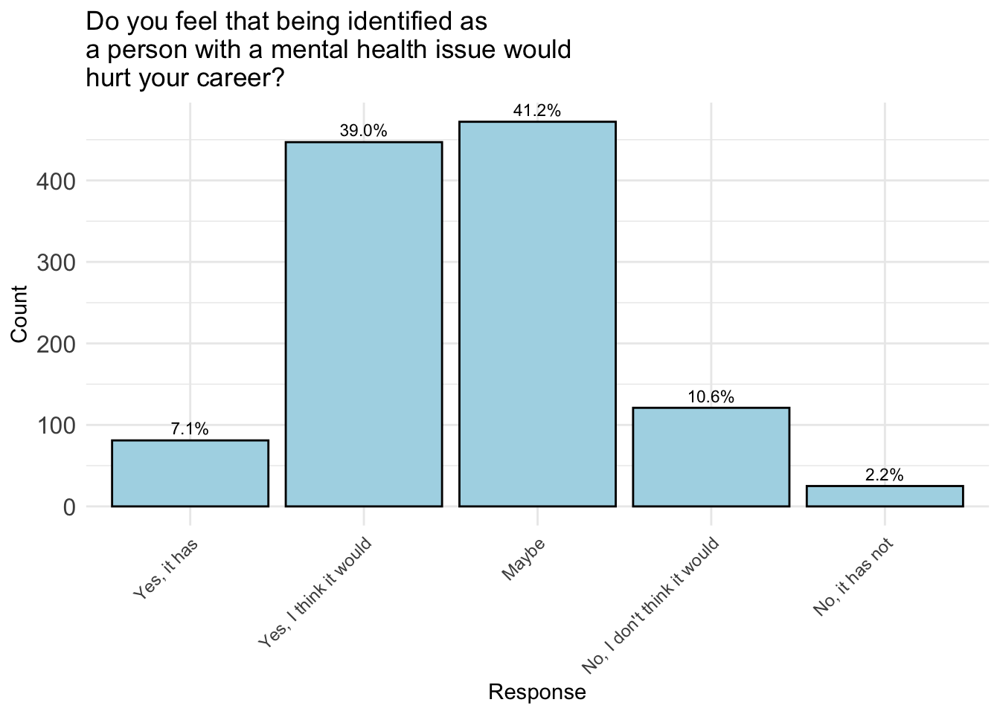
– When it comes to the broader perception of career, respondents lean towards believing that a mental health issue would “maybe” or “yes, it would” affect their tech career. This highlights that the perceived negative effects of mental health issues transcend the work place - so it becomes a public health issue too.
# to plot effect of MH self-identification on coworkers' negative perceptioncategory_order <-c("Yes, they do", "Yes, I think they would", "Maybe", "No, I don't think they would", "No, they do not")ggplot(clean_mh_2016, aes(x =factor(mh_negative_perception_coworkers, levels = category_order))) +geom_bar(fill ="blue", color ="black") +labs(x ="Response", y ="Count",title ="Do you think that team members/co-workers would view you more negatively if they knewyou suffered from a mental health issue?") +theme_minimal() +theme(axis.text.y =element_text(size =12), axis.text.x =element_text(angle =45, hjust =1))
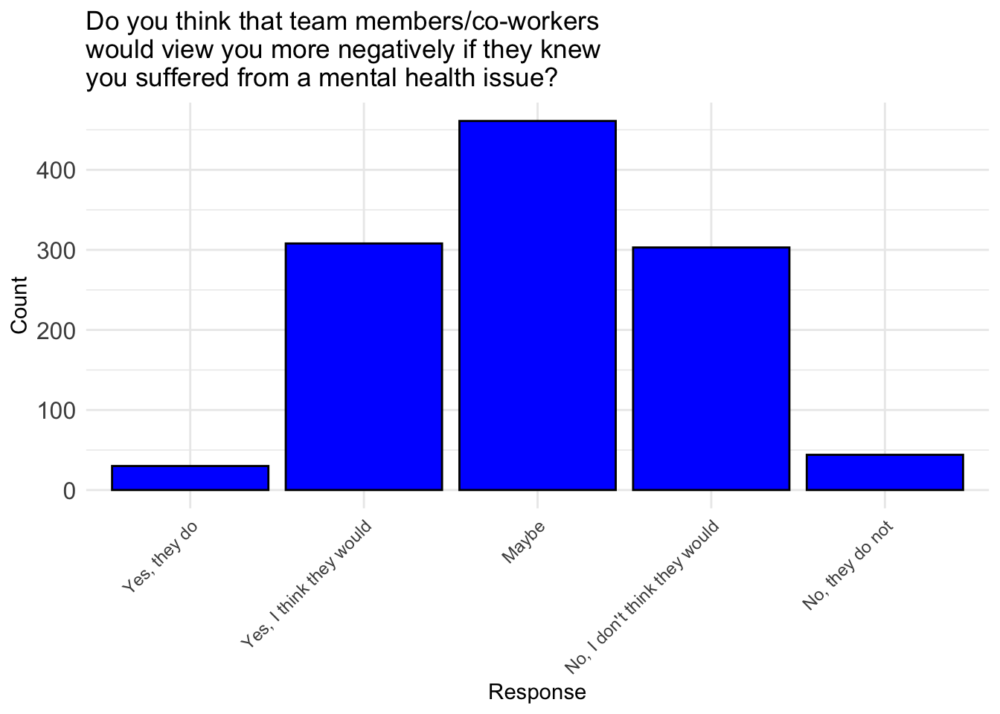
– Finally, there is mainly uncertainty around the effects of coworkers being aware of mental health issues, as there is an even distribution between existing or non-existing negative perceptions.
9. Summary of Data Intepretation
Sample profile:
Middle-aged (average: 33yo), primarily working at SMEs or large corporations, in a hybrid work arrangement, usually male, and taking on the role of developer (front and back-end), mostly from the US and Canada.
Current mental health offer:
Less than half of the sample receives mental health coverage. This indicates an available target market of 2.8 million potential customers for BetterHelp.
Strong need for mental health coverage to be simplified to workers.
Mental health is not commonly addressed in the tech workplace.
Anonymity must be addressed in BetterHelp’s marketing and communication efforts.
Status of employees’ mental health:
There is a statistically significant association between mental health family history and personal history.
There is a prevailing stigma for workers to share their mental health conditions with their employers, work colleagues, and direct supervisors.
The top two diagnosed and suspected mental health conditions are mood disorders and anxiety disorders.
More than half of respondents are willing to address mental health issues (57%).
Recurrent attitudes towards mental health in the workspace:
There is guilt around bringing up mental health issues in the workplace that must be addressed with the association between a mental health diagnosis and a history of mental health in the family.
When it comes to mental health being discussed in job interviews, employees tend to hide either physical or mental health issues from potential employers (mental health at double the rate). BetterHelp could enable potential business partners to differentiate themselves as better places to work by helping them handle mental health issues in the application process.
Perceived negative effects of mental health issues transcend the workplace: respondents mainly believe it affects their entire career. Mental health in the tech workplace must be addressed as a public health issue too.
10. Conclusions
BetterHelp should address potential business partners with three defining features: anonymous, practical, and public-health-oriented.
Main reasons:
Doubt around anonymity and simplicity are keeping employees from accessing current mental health offer
There is a significant association between mental health family history and personal history, which must be practically addressed and communicated to clients
Negative effects from mental health transcend to employees’ entire careers, so BetterHelp should partner with public organizations to reduce the cost from potential business partners
Next steps:
Exploring the long-term impact of mental health offering by analyzing retention or productivity
Combine quantitative survey data with qualitative insights to provide a more comprehensive understanding of the employees’ experiences with mental health offerings
Compare specific mental health programs or initiatives to identify the most effective